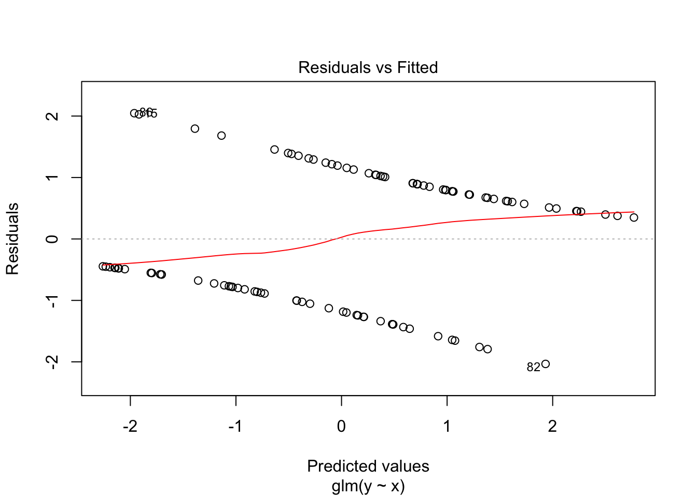
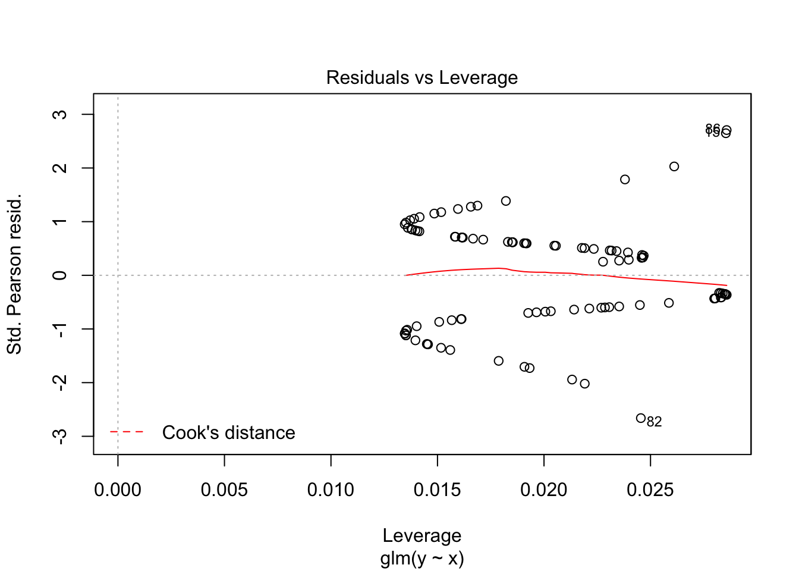
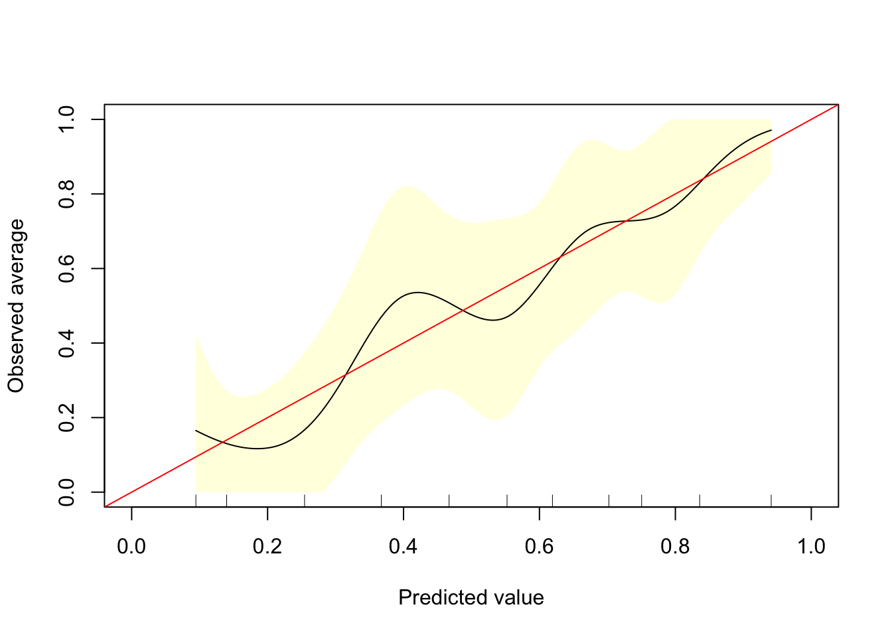

Last updated: 2017-11-09
Code version: 467db20
Tutor:
lb <- read.table(epistats::fromParentDir("data/lowbirth.dat"), header = T)
str(lb)'data.frame': 189 obs. of 11 variables:
$ id : int 85 86 87 88 89 91 92 93 94 95 ...
$ low : int 0 0 0 0 0 0 0 0 0 0 ...
$ age : int 19 33 20 21 18 21 22 17 29 26 ...
$ lwt : int 182 155 105 108 107 124 118 103 123 113 ...
$ race : int 2 3 1 1 1 3 1 3 1 1 ...
$ smoke: int 0 0 1 1 1 0 0 0 1 1 ...
$ ptl : int 0 0 0 0 0 0 0 0 0 0 ...
$ ht : int 0 0 0 0 0 0 0 0 0 0 ...
$ ui : int 1 0 0 1 1 0 0 0 0 0 ...
$ ftv : int 0 3 1 2 0 0 1 1 1 0 ...
$ bwt : int 2523 2551 2557 2594 2600 2622 2637 2637 2663 2665 ...require(dplyr)Loading required package: dplyr
Attaching package: 'dplyr'The following objects are masked from 'package:stats':
filter, lagThe following objects are masked from 'package:base':
intersect, setdiff, setequal, unionlb %>%
group_by(age) %>%
summarize(mean(low))# A tibble: 24 x 2
age `mean(low)`
<int> <dbl>
1 14 0.6666667
2 15 0.6666667
3 16 0.1428571
4 17 0.4166667
5 18 0.2000000
6 19 0.1875000
7 20 0.4444444
8 21 0.4166667
9 22 0.1538462
10 23 0.3846154
# ... with 14 more rowsrequire(data.table)
require(ggplot2)
setDT(lb)
lb[, list(prob = mean(low)), by= "age"] %>%
ggplot(aes(x = age, y = prob)) + geom_point()lb %>%
group_by(age) %>%
summarize(n_low = sum(low==1),
n_births = n(),
prob = n_low/n_births) %>%
chisq.test()Warning in chisq.test(.): Chi-squared approximation may be incorrect
Pearson's Chi-squared test
data: .
X-squared = 139.23, df = 69, p-value = 1.171e-06Problems with Chi-square: no effect size Problems with linear model when modeling percentage: variance is higher around 0.5
Create link function. Transforming probability. Maps any value from \(-\infty\) to \(\infty\) to a value between 0 and 1. Not the only possible link function.
\[w = \text{logit}(\pi) = ln(\frac{\pi}{1-\pi}) = \beta_0 + \beta_1X\]
So equivalently:
\[\pi(X) = \frac{1}{1+e^{-w}} = \frac{1}{1+e^{-(\beta_0+\beta_1X)}}\]
In general
\[\pi(X) = \frac{1}{1+e^{-(\beta_0+\sum_i{\beta_ix_i})}}\]
\[w_1 = ln(\frac{\pi(X=1)}{1-\pi(X=1)}) = \beta_0+\beta_1X = \beta_0+\beta_1\] \[w_0 = ln(\frac{\pi(X=0)}{1-\pi(X=0)}) = \beta_0+\beta_1X = \beta_0\] \[ln(OR) = \frac{ln(\pi(X=1)/(1-\pi(X=1)))}{ln(\pi(X=0)/(1-\pi(X=0)))} = w_1 - w_0 = \beta_1\]
Simulate a continous variable
set.seed(2)
n = 100
x = rnorm(n)
x_quant = rank(x)/length(x)
y = sapply(x_quant, function(x) sample(c(0,1), size = 1, prob = c(x, 1-x)))
table(x>0.5, y) y
0 1
FALSE 23 46
TRUE 25 6plot(x, y)fit <- glm(y~x, family = binomial(link = "logit"))
summary(fit)
Call:
glm(formula = y ~ x, family = binomial(link = "logit"))
Deviance Residuals:
Min 1Q Median 3Q Max
-2.0336 -0.8649 0.3866 0.8909 2.0465
Coefficients:
Estimate Std. Error z value Pr(>|z|)
(Intercept) 0.05489 0.23255 0.236 0.813
x -1.10727 0.24702 -4.483 7.38e-06 ***
---
Signif. codes: 0 '***' 0.001 '**' 0.01 '*' 0.05 '.' 0.1 ' ' 1
(Dispersion parameter for binomial family taken to be 1)
Null deviance: 138.47 on 99 degrees of freedom
Residual deviance: 110.02 on 98 degrees of freedom
AIC: 114.02
Number of Fisher Scoring iterations: 4plot(fit)
predicted_probs <- predict(fit, newdata = data.frame(x), type = "response")
gbm::calibrate.plot(y = y, p = predicted_probs)
There are measures for \(R^2\): Nagelkerke, Cox & Snell (Nagelkerke always higher). However, \(R^2\) is hard to interpret for binary outcomes, and it’s use is disputed.
Problems with leas squares * least squares criterion assumes that error variance is the case for each case (homoscodasticity) * for binomial distribution, error variance depends on \(\pi\). * binomial distribution is skewed for values close to 0 and 1
Likelihood
Likelihood is product of all likelihoods
\[L(\pi) = P(Y_1 = y_1) * P(Y_2 = y_2) * ... * P(Y_n = y_n) = \prod_i{\pi^{Y_i}(1-\pi)^{1-Y_i}}\]
With \(\pi\) the predicted probability
Properties of likelihood * the higher the likelihood, the better the model fits * a perfect fit = 1, min = 0 * decreases quickly with increasing sample size
In practice: use log-likelihood axample
Maximum likelihood: get \(\pi(\beta_0, \beta_1)\) that maximizes the likelihood.
You could have local maxima, so you sometimes need to use multiple starting points.
So estimations of \(\beta_0\) and \(\beta_1\) that optimize the likelihood-ratio, are called the maximum likelihood estimates (MLE). Take first derivates, set to 0. Second derivatise give the values for standard errors of MLE.
\[SE(MLE) = \frac{1}{\sqrt{-\frac{d^2 L}{dx^2}(x_{optimum})}}\]
So very peaked likelihood functions lead to low standard errors.
Calculate \(L\) for each model. If \(L_1 > L_0\), than model 1 fits the data better.
Test statistic \(T = -2*(L_1-L_0)\) is chi-squared distributed with df = difference in number of parameters between the models.
Test statistic \(T = b/se(b)\), the \(T^2\) is approximately chi-squared distributed with one degree of freedom
The test statistic is a ratio between the first and second derivatives of the likelihood at \(\beta_1 = 0\). It is also approximately chi-squared distributed. SPSS uses this test to decide whether variables should be included in a (stepwise) forward selection procedure
Likelihood and Score are better than Wald. All tests can be expanded, but only for nested models.
Model is compromise between good fit and minimum number of variables (for prediction! not necessary for causal research) More explanatory variables will give higher likelihood
To take number of variables in accound, use Akaike’s information criterion (AIC):
\[AIC = -2*ln(L) + 2*p\] where \(p\) is the number of parameters in the model.
AIC is not a measure of how well a model fits the data, but can be used to compare models (lower AIC is better).
When AICs are very close, take the simpler model.
fit0 <- glm(low~1, family = binomial(link = "logit"), data = lb)
fit_all <- glm(low~., family = binomial(link = "logit"), data = lb[, -c("id", "bwt")])
# add1(object = fit0, scope = list(lower = fit0, upper = fit_all), test = "LRT", data = lb)
step(object = fit0, scope = list(lower = fit0, upper = fit_all), test = "LRT", data = lb)Start: AIC=236.67
low ~ 1
Df Deviance AIC LRT Pr(>Chi)
+ ptl 1 227.89 231.89 6.7794 0.009222 **
+ lwt 1 228.69 232.69 5.9813 0.014458 *
+ ui 1 229.60 233.60 5.0761 0.024258 *
+ smoke 1 229.81 233.81 4.8674 0.027369 *
+ ht 1 230.65 234.65 4.0221 0.044907 *
+ race 1 231.10 235.10 3.5684 0.058890 .
+ age 1 231.91 235.91 2.7600 0.096646 .
<none> 234.67 236.67
+ ftv 1 233.90 237.90 0.7731 0.379246
---
Signif. codes: 0 '***' 0.001 '**' 0.01 '*' 0.05 '.' 0.1 ' ' 1
Step: AIC=231.89
low ~ ptl
Df Deviance AIC LRT Pr(>Chi)
+ lwt 1 223.41 229.41 4.4857 0.034179 *
+ ht 1 223.58 229.58 4.3093 0.037905 *
+ age 1 224.27 230.27 3.6225 0.057004 .
+ race 1 224.27 230.27 3.6183 0.057146 .
+ smoke 1 224.78 230.78 3.1157 0.077541 .
+ ui 1 224.89 230.89 3.0051 0.083005 .
<none> 227.89 231.89
+ ftv 1 227.30 233.30 0.5925 0.441461
- ptl 1 234.67 236.67 6.7794 0.009222 **
---
Signif. codes: 0 '***' 0.001 '**' 0.01 '*' 0.05 '.' 0.1 ' ' 1
Step: AIC=229.41
low ~ ptl + lwt
Df Deviance AIC LRT Pr(>Chi)
+ ht 1 215.96 223.96 7.4431 0.006368 **
+ smoke 1 220.54 228.54 2.8688 0.090310 .
+ race 1 220.98 228.98 2.4244 0.119457
+ age 1 221.05 229.05 2.3527 0.125069
+ ui 1 221.23 229.23 2.1803 0.139785
<none> 223.41 229.41
+ ftv 1 223.12 231.12 0.2923 0.588722
- lwt 1 227.89 231.89 4.4857 0.034179 *
- ptl 1 228.69 232.69 5.2838 0.021525 *
---
Signif. codes: 0 '***' 0.001 '**' 0.01 '*' 0.05 '.' 0.1 ' ' 1
Step: AIC=223.96
low ~ ptl + lwt + ht
Df Deviance AIC LRT Pr(>Chi)
+ ui 1 213.01 223.01 2.9505 0.085849 .
+ smoke 1 213.15 223.15 2.8167 0.093289 .
<none> 215.96 223.96
+ race 1 214.00 224.00 1.9673 0.160730
+ age 1 214.01 224.01 1.9531 0.162254
+ ftv 1 215.84 225.84 0.1186 0.730604
- ptl 1 221.14 227.14 5.1783 0.022871 *
- ht 1 223.41 229.41 7.4431 0.006368 **
- lwt 1 223.58 229.58 7.6195 0.005774 **
---
Signif. codes: 0 '***' 0.001 '**' 0.01 '*' 0.05 '.' 0.1 ' ' 1
Step: AIC=223.01
low ~ ptl + lwt + ht + ui
Df Deviance AIC LRT Pr(>Chi)
+ smoke 1 210.31 222.31 2.7027 0.100176
<none> 213.01 223.01
+ race 1 211.17 223.17 1.8413 0.174800
+ age 1 211.33 223.33 1.6836 0.194445
- ui 1 215.96 223.96 2.9505 0.085849 .
- ptl 1 216.61 224.61 3.5996 0.057794 .
+ ftv 1 212.95 224.95 0.0659 0.797469
- lwt 1 219.61 227.61 6.5996 0.010200 *
- ht 1 221.23 229.23 8.2133 0.004158 **
---
Signif. codes: 0 '***' 0.001 '**' 0.01 '*' 0.05 '.' 0.1 ' ' 1
Step: AIC=222.31
low ~ ptl + lwt + ht + ui + smoke
Df Deviance AIC LRT Pr(>Chi)
+ race 1 205.21 219.21 5.0997 0.023929 *
<none> 210.31 222.31
+ age 1 208.77 222.77 1.5395 0.214698
- ptl 1 212.83 222.83 2.5152 0.112752
- smoke 1 213.01 223.01 2.7027 0.100176
- ui 1 213.15 223.15 2.8366 0.092139 .
+ ftv 1 210.29 224.29 0.0201 0.887332
- lwt 1 216.63 226.63 6.3195 0.011942 *
- ht 1 218.45 228.45 8.1362 0.004339 **
---
Signif. codes: 0 '***' 0.001 '**' 0.01 '*' 0.05 '.' 0.1 ' ' 1
Step: AIC=219.21
low ~ ptl + lwt + ht + ui + smoke + race
Df Deviance AIC LRT Pr(>Chi)
<none> 205.21 219.21
- ptl 1 207.34 219.34 2.1296 0.144475
- ui 1 207.81 219.81 2.6025 0.106694
+ age 1 204.33 220.33 0.8795 0.348334
+ ftv 1 205.18 221.18 0.0320 0.857962
- lwt 1 209.58 221.58 4.3650 0.036684 *
- race 1 210.31 222.31 5.0997 0.023929 *
- smoke 1 211.17 223.17 5.9612 0.014624 *
- ht 1 212.61 224.61 7.3972 0.006533 **
---
Signif. codes: 0 '***' 0.001 '**' 0.01 '*' 0.05 '.' 0.1 ' ' 1
Call: glm(formula = low ~ ptl + lwt + ht + ui + smoke + race, family = binomial(link = "logit"),
data = lb)
Coefficients:
(Intercept) ptl lwt ht ui
-0.80364 0.49145 -0.01295 1.83316 0.74794
smoke race
0.94817 0.46913
Degrees of Freedom: 188 Total (i.e. Null); 182 Residual
Null Deviance: 234.7
Residual Deviance: 205.2 AIC: 219.2In SPSS, entering variables is determined by score test, removing is with LR test. In each step, ‘step’ compares it with the previous model, ‘model’ compares it with null-model.
Note that likelihood-ratio may increase, even when accuracy goes down.
sessionInfo()R version 3.3.2 (2016-10-31)
Platform: x86_64-apple-darwin13.4.0 (64-bit)
Running under: macOS Sierra 10.12.6
locale:
[1] en_US.UTF-8/en_US.UTF-8/en_US.UTF-8/C/en_US.UTF-8/en_US.UTF-8
attached base packages:
[1] stats graphics grDevices utils datasets methods base
other attached packages:
[1] bindrcpp_0.2 ggplot2_2.2.1 data.table_1.10.4 dplyr_0.7.1
loaded via a namespace (and not attached):
[1] Rcpp_0.12.11 knitr_1.17 bindr_0.1 magrittr_1.5
[5] splines_3.3.2 munsell_0.4.3 lattice_0.20-35 gbm_2.1.3
[9] colorspace_1.3-2 R6_2.2.2 rlang_0.1.1 plyr_1.8.4
[13] stringr_1.2.0 tools_3.3.2 epistats_0.1.0 parallel_3.3.2
[17] grid_3.3.2 gtable_0.2.0 git2r_0.19.0 htmltools_0.3.6
[21] survival_2.41-3 lazyeval_0.2.0 yaml_2.1.14 rprojroot_1.2
[25] digest_0.6.12 assertthat_0.2.0 tibble_1.3.3 Matrix_1.2-10
[29] glue_1.1.1 evaluate_0.10.1 rmarkdown_1.6 labeling_0.3
[33] stringi_1.1.5 scales_0.4.1 backports_1.1.0 pkgconfig_2.0.1 This R Markdown site was created with workflowr